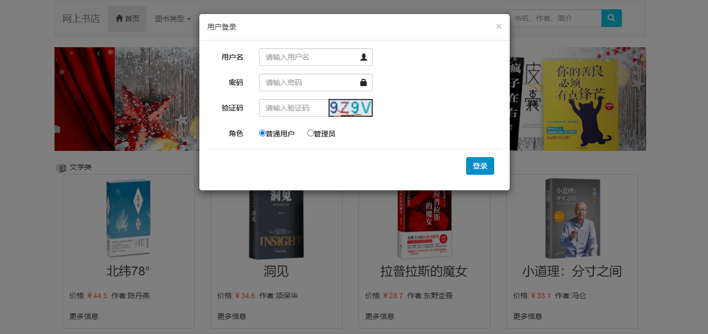
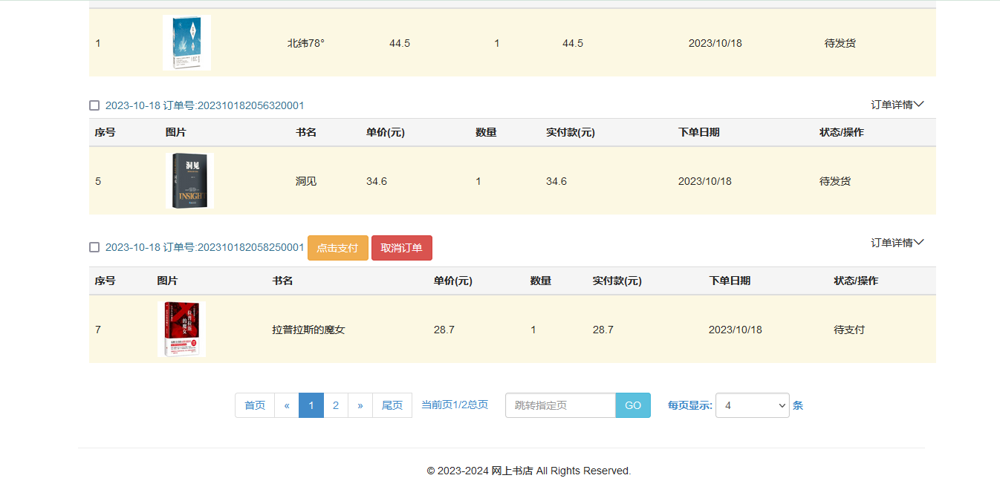
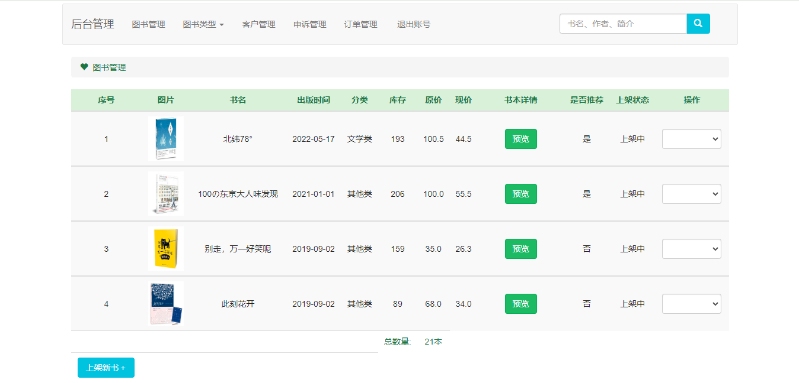
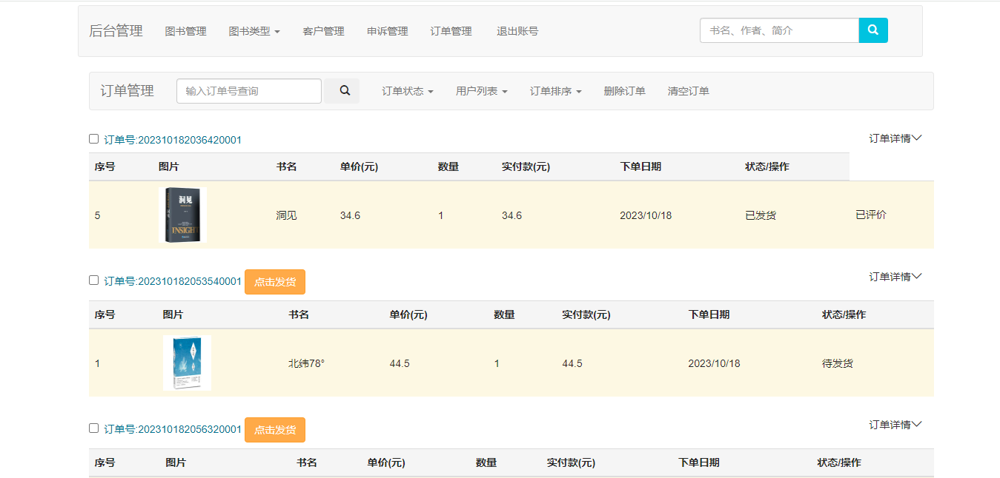

SpringBoot 网上书店/网上书城
一、项目介绍
229
网上书店基于 SpringBoot+Mybatis 进行开发，系统分为前台和后台，用户通过前台网站进行图书的浏览及下单，管理员通过后台管理图书信息，订单信息等，功能如下：
前台
-
首页
-
注册登录
-
图书搜索
-
分类查询
-
图书详情
-
图书推荐
-
购物车
-
下单
-
模拟支付
-
取消订单
-
我的订单
-
订单管理
-
确认收货
-
订单评价
-
个人信息
后台
二、技术框架
-
后端：SpringBoot，SpringMvc，Mybatis
-
前端：layui，thymeleaf，jquery
三、安装教程
-
用 idea 打开项目
-
在 idea 中配置 jdk 环境
-
配置 maven 环境并下载依赖
-
新建数据库，导入数据库文件
-
在 application.yml 文件中将数据库账号密码改成自己本地的
-
启动运行，浏览器输入
http://localhost:8080
进行访问。前台用户账号密码：wm/123456；管理员账号密码： admin/123456
四、项目截图



